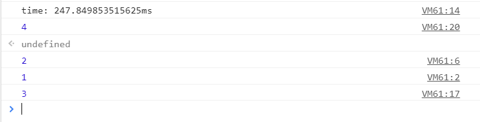
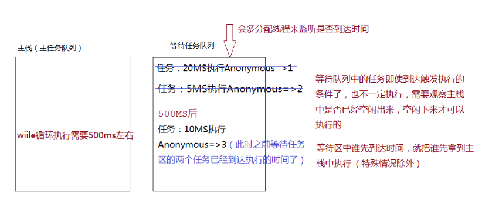

同步：在一个线程上（主栈/主任务队列）同一个时间只能做一件事情，当前事情完成才能进行下一个事情（先把一个任务进栈执行，执行完成，在把下一个任务进栈，上一个任务出栈...）
执行顺序优先级：SYNC => MICRO => MACRO
所有JS中的异步编程仅仅是根据某些机制来管控任务的执行顺序，不存在同时执行两个任务这一说法
先来看一个例子：
setTimeout(() => {
console.log(1);
}, 20);
setTimeout(() => {
console.log(2);
}, 0);//=>默认会有最小的等待时间(V8一般是5~6MS)
console.time('WHILE');
let i = 0;
while (i <= 99999999) {
i++;
}
console.timeEnd('WHILE');
setTimeout(() => {
console.log(3);
}, 10);
console.log(4);结果输出如图：


let xhr = new XMLHttpRequest();
xhr.open('GET', 'xxx.txt', false);
// 放到等待区的时候，此时状态是1
xhr.onreadystatechange = () => {
console.log(xhr.readyState);//=>4
};
xhr.send();
// 同步ajax，xhr.send时为同步，xhr.send()执行完后状态为4，任务状态为4的时候主栈空闲，onreadystatechange监听到状态变化，输出4
let xhr = new XMLHttpRequest();
xhr.open('GET', 'xxx.txt', false);
xhr.send();
// 状态已经为4了
xhr.onreadystatechange = () => {//=>状态改变才会触发,放到等待区的时候状态已经为4了，不会在改变了，所以不会执行这个方法（啥都不会输出）
console.log(xhr.readyState);
}; let xhr = new XMLHttpRequest();
xhr.open('GET', 'xxx.txt');
xhr.send();//=>异步操作：执行SEND后，有一个线程是去请求数据，主栈会空闲下来
// 放等待区之前状态是1
xhr.onreadystatechange = () => {
console.log(xhr.readyState);//=> 2 3 4
};
// 主栈又空闲了
// 状态为2 把函数执行
// 状态为3 把函数执行
// 状态为4 把函数执行